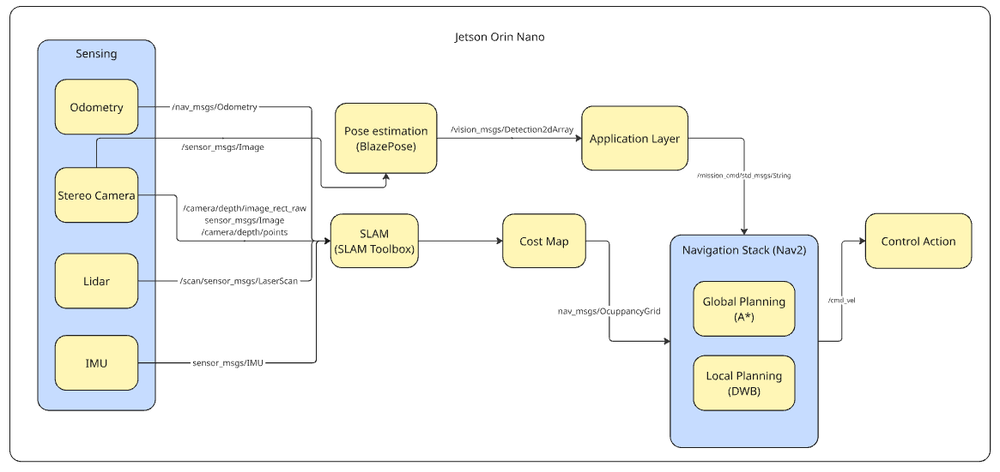
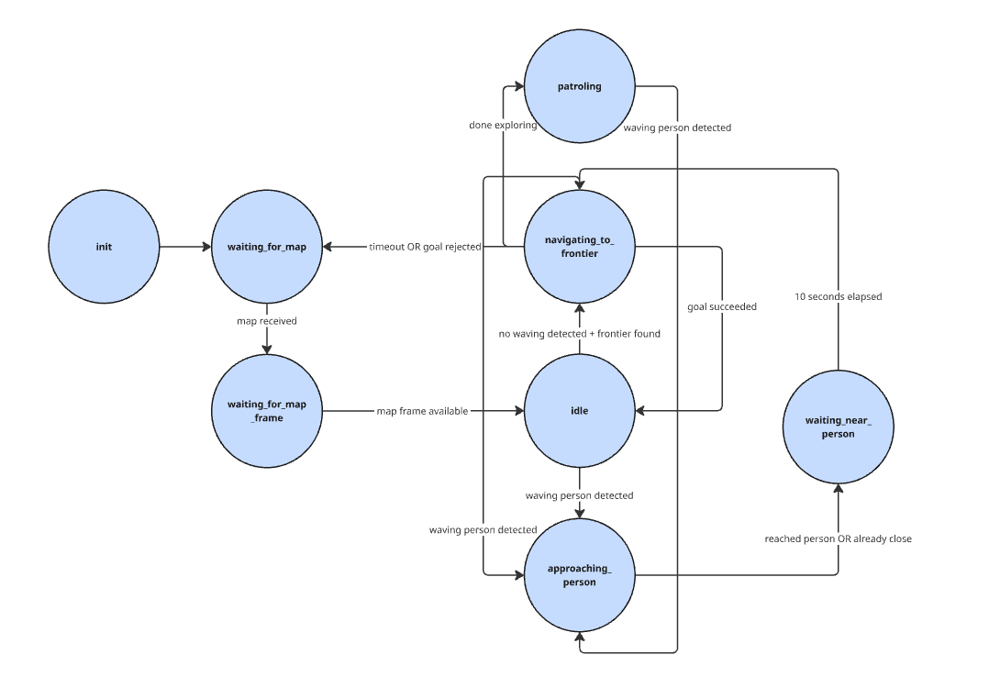

Mobile Trash Can Robot
This page covers the project work from 18-848 Autonomous Robotics II. For this project, my partner and I created an autonomous trash can robot that wanders/maps the indoors and drives towards those who wave it to receive trash.
The robot uses a Rover Robotics 2WD mini base for movement, with an automatic trash can mounted on top that can open its lid when a person is nearby. For localization and mapping, the robot uses a RPLidar S2, IMU, and wheel encoders in combination with the ROS2 slam-toolbox. To detect waving people, we used an Intel RealSense to capture RGB‑D images and ran BlazePose on the images to detect whether anyone was waving at the robot.
Using the depth information from the RealSense, we translated the person’s position into world‑frame coordinates, then performed both DWB local planning and A* global path planning to drive the robot over. We also wrote custom behavior for when the robot was waiting for a new goal so that it would wander around and keep mapping its surroundings for future reference.

